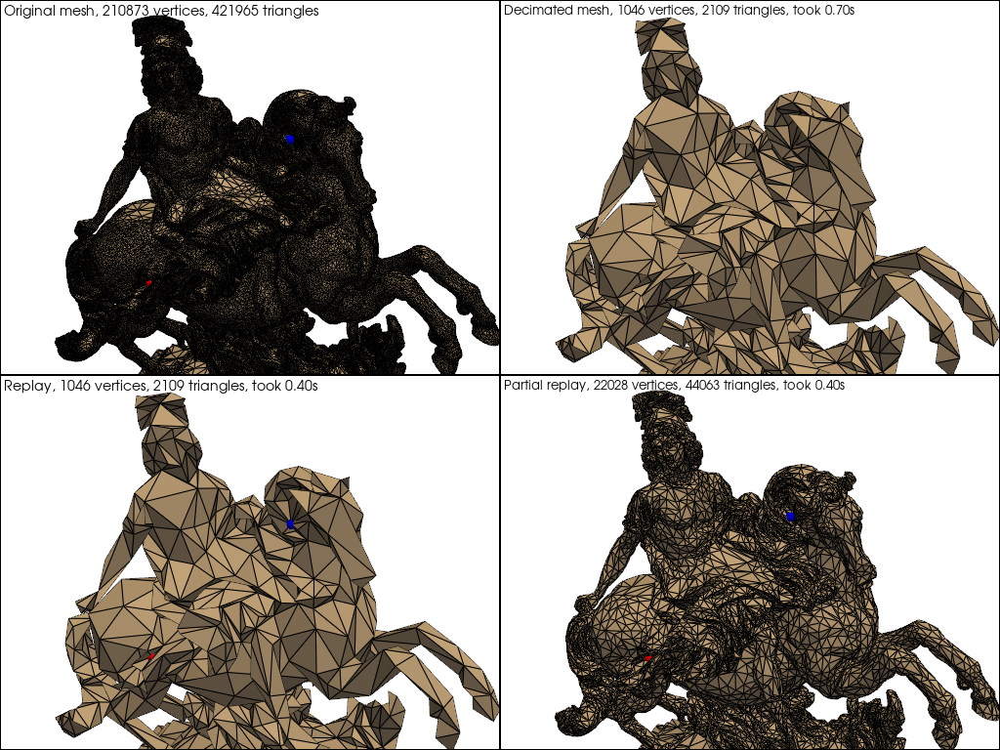

Note
Go to the end to download the full example code.
Replay Decimation#
This example shows how to replay a decimation sequence with replay.

from time import time
import numpy as np
import pyvista as pv
from pyvista import examples
import fast_simplification
# Ancillary function to convert triangles to padded faces
def triangles_to_faces(triangles):
tmp = 3 * np.ones((len(triangles), 4), dtype=triangles.dtype)
tmp[:, 1:] = triangles
return tmp.copy().reshape(-1)
# mesh = examples.download_cow().triangulate().clean()
# cpos = [(12.81184076782852, 0.2698100334791761, -10.82840852844307),
# (-5.767085129340097, -0.45822321783537723, 6.935179459234972),
# (-0.031039486276564762, 0.99948202301343, 0.008499174352116386)]
# load an example mesh
mesh = examples.download_louis_louvre()
# nice camera angle
cpos = [
(5.428820015861438, -10.151721995577468, 15.902198956656623),
(1.4405146331169636, 2.897371104075222, 10.951469667556948),
(-0.01001925846458282, 0.3520252491158569, 0.9359368773826251),
]
points = mesh.points
triangles = mesh.faces.reshape(-1, 4)[:, 1:]
# Decimate the mesh with fast_simplification
# and record the collapses
start = time()
dec_points, dec_triangles, collapses = fast_simplification.simplify(
points, triangles, 0.995, return_collapses=True
)
time_simplify = time() - start
# Replay the decimation sequence and record the mapping between
# the original points and the decimated points
start = time()
(
dec_points_replay,
dec_triangles_replay,
indice_mapping_replay,
) = fast_simplification.replay_simplification(
points=points,
triangles=triangles,
collapses=collapses,
)
time_replay_new = time() - start
# Partially replay the decimation sequence (90% of the collapses are replayed)
partial_collapses = collapses[0 : int(0.9 * len(collapses))]
start = time()
(
dec_points_replay2,
dec_triangles_replay2,
indice_mapping_replay2,
) = fast_simplification.replay_simplification(
points=points, triangles=triangles, collapses=partial_collapses
)
time_replay_new = time() - start
# Randomly select two points on the original mesh
np.random.seed(1)
i, j = np.random.randint(0, len(mesh.points), 2)
# Map the indices of the original points to the indices of the decimated points
m_i = indice_mapping_replay[i]
m_j = indice_mapping_replay[j]
m_i2 = indice_mapping_replay2[i]
m_j2 = indice_mapping_replay2[j]
p = pv.Plotter(shape=(2, 2), theme=pv.themes.DocumentTheme())
p.subplot(0, 0)
# Plot the original mesh with the two highlighted points
p.add_mesh(mesh, show_edges=True, color="tan")
p.add_points(mesh.points[i], color="red", point_size=10, render_points_as_spheres=True)
p.add_points(mesh.points[j], color="blue", point_size=10, render_points_as_spheres=True)
p.add_text(
f"Original mesh, {mesh.points.shape[0]} vertices, {triangles.shape[0]} triangles",
font_size=10,
)
p.camera_position = cpos
p.subplot(0, 1)
# Plot the decimated mesh
p.add_mesh(
pv.PolyData(dec_points, faces=triangles_to_faces(dec_triangles)),
show_edges=True,
color="tan",
)
p.add_text(
f"Decimated mesh, {dec_points.shape[0]} vertices, {dec_triangles.shape[0]} triangles, took {time_simplify:.2f}s",
font_size=10,
)
p.camera_position = cpos
p.subplot(1, 0)
# Plot the mesh decimated with replay with the two highlighted points
p.add_mesh(
pv.PolyData(dec_points_replay, faces=triangles_to_faces(dec_triangles_replay)),
show_edges=True,
color="tan",
)
p.add_points(
dec_points_replay[m_i],
color="red",
point_size=10,
render_points_as_spheres=True,
)
p.add_points(
dec_points_replay[m_j],
color="blue",
point_size=10,
render_points_as_spheres=True,
)
n_points, n_triangles = dec_points_replay.shape[0], dec_triangles_replay.shape[0]
p.add_text(
f"Replay, {n_points} vertices, {n_triangles} triangles, took {time_replay_new:.2f}s",
font_size=10,
)
p.camera_position = cpos
p.subplot(1, 1)
# Plot the mesh partially decimated with replay with the two highlighted points
p.add_mesh(
pv.PolyData(dec_points_replay2, faces=triangles_to_faces(dec_triangles_replay2)),
show_edges=True,
color="tan",
)
p.add_points(
dec_points_replay2[m_i2],
color="red",
point_size=10,
render_points_as_spheres=True,
)
p.add_points(
dec_points_replay2[m_j2],
color="blue",
point_size=10,
render_points_as_spheres=True,
)
n_points, n_triangles = dec_points_replay2.shape[0], dec_triangles_replay2.shape[0]
p.add_text(
f"Partial replay, {n_points} vertices, {n_triangles} triangles, took {time_replay_new:.2f}s",
font_size=10,
)
p.camera_position = cpos
p.show()
Total running time of the script: (0 minutes 8.784 seconds)